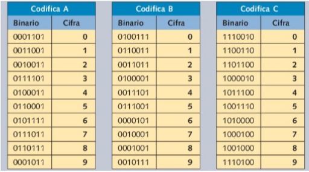

Codifica Codici a barre
La codifica più diffusa è l'EAN-13 che permette di codificare 13 cifre, ma esiste anche I’EAN-8 che è più semplice e ne codifica solo 8.
Prima di tutto esistono 3 codifiche, chiamate A, B e C, che utilizzano 7 bit per codificare una cifra.

La prima cifra del codice indica quali codifiche utilizzare nelle varie posizioni, come nella seguente tabella.
-Per esempio se la prima cifra (che viene anche indicata fuori dal codice a barre) è 9, significa che nella posizione 1 viene utilizzata la codifica A, nella seconda la codifica B, nella terza ancora B ecc.
-Se viene letto un numero binario che non appartiene alla giusta codifica, significa che c'è un errore e occorre rileggere il codice.
-Dopo la prima cifra si trovano due barre un po' più lunghe che indicano l’inizio del codice.
-Successivamente si trovano 6 numeri, poi il simbolo di stop, altri 6 numeri e il segno di chiusura.
-La codifica è definita posizione per posizione, a partire dalla prima cifra.

Codifica Qr code
La codifica dei Qr code è basata sul massiccio uso di ridondanza nella gestione dell’errore.
Tramite il codice Reed-Solomon, nel caso in cui il QR fosse in parte danneggiato, per esempio da macchie o graffi sul supporto cartaceo, c’è la possibilità di ricostruire i dati persi, ripristinando, durante la decodifica, fino al 30% delle informazioni codificate.
I codici sono fatti di quadratini bianchi e neri, ognuno di questi è un modulo.
Alcuni moduli non devono essere coperti o modificati, altrimenti il codice non verrà letto.
Sono stati evidenziati, nella figura sottostante, diversi colori:
-I tre grandi quadrati evidenziati in rosso sono i segnaposto, questi indicano allo scanner i margini del QR code.
-Il quadrato piccolo, evidenziato in rosso è di allineamento, è un punto di riferimento per lo scanner, per essere sicuro di essere allineato(nei codici più grandi ve ne sono più d’uno).
-Le strisce rosse che evidenziano quadratini neri e bianchi definiscono le posizioni di righe e colonne.
-Le sezioni verdi determinano il formato. Queste indicheranno allo scanner se il codice indica un sito web, un SMS, ideogrammi cinesi, numeri o combinazioni di questi elementi.
-I moduli evidenziati in blu rappresentano il numero della versione. Più moduli ci sono, più è alto il numero della versione.